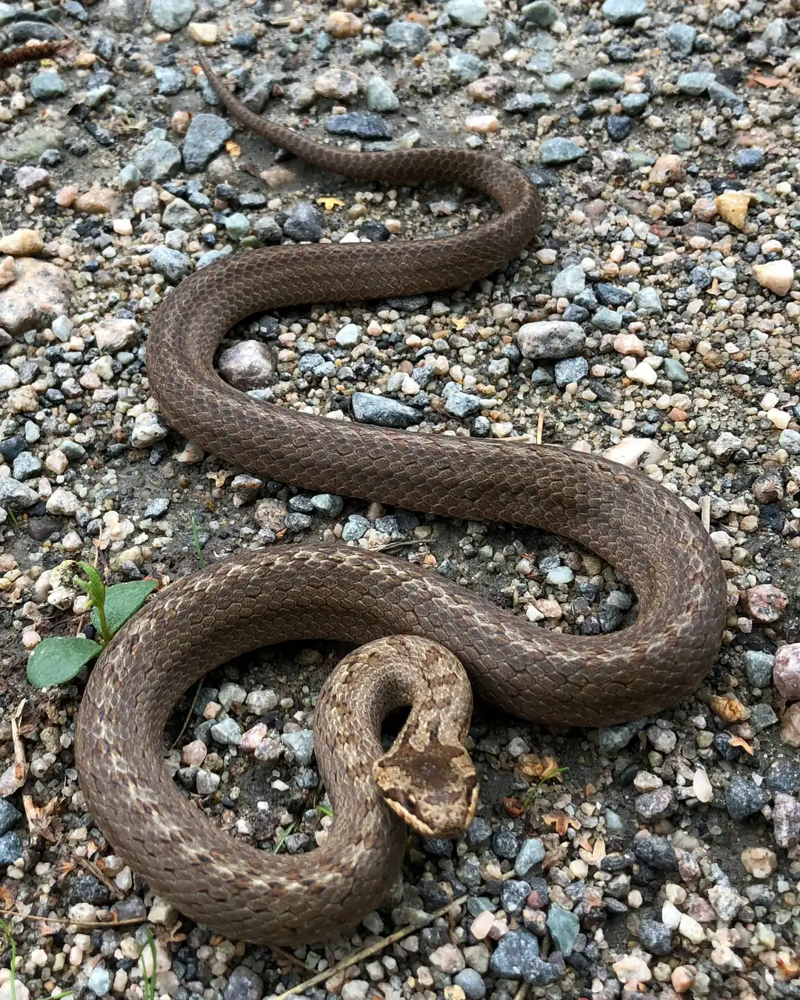
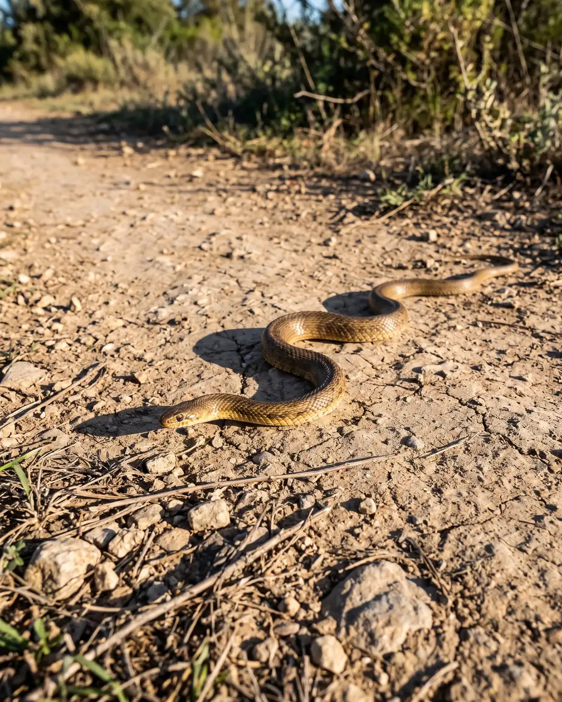

Case #19 · Snakes
About this case
Case #19 is closed. It was the daily case for November 19, 2026 and its theme was Snakes. The detectives of that day had two challenges: five images to judge as real photographs or AI-made pictures, and five one-sentence claims to judge as facts or fakes.
- AI-generated images: 4 of 5
- Fake claims: 2 of 5
Below you will find every answer. Each AI-generated image comes with the prompt that produced it, and each claim with the truth behind it and the details worth remembering, so you can check what you missed.
One of the fakes: “Some snakes can photosynthesize if they cannot find food.” The truth: No snake or other reptile can photosynthesize; snakes are strict carnivores that depend on hunting.
Want to sharpen your eye? Read our guide to spotting AI images or our guide to spotting fake news, then play today's case.
Images
-
Image 1

AI
The suspect's confession
A ladder snake sunbathing on some rocks on a Mediterranean mountain path, photographed with a 300 mm telephoto lens; detailed scales, part of the body hidden among dry bushes and harsh midday light.
-
Image 2

AI
The suspect's confession
A grass snake swimming on the surface of a pond with its head out of the water, leaving a small wake; reflections of the shoreline vegetation on the water and muted colors of an overcast morning.
-
Image 3

AI
The suspect's confession
A snub-nosed viper coiled among leaf litter and twigs on a forest floor, almost camouflaged with its surroundings; focus on the head, the rest of the body slightly blurred and dim light filtering through the trees.
-
Image 4

REAL
Real photograph
-
Image 5

AI
The suspect's confession
A medium-sized snake crossing a dry dirt road, captured in motion with its body in a curve and slight blur on the tail; strong shadows from afternoon light and small pebbles in the foreground.
Fact or Fake
-
Claim 1
FAKE “Some snakes can photosynthesize if they cannot find food.”
No snake or other reptile can photosynthesize; snakes are strict carnivores that depend on hunting.
- Some animals, like the sea slug Elysia chlorotica, do absorb chloroplasts.
-
Claim 2
FACT “A python's heart changes size and position when it swallows large prey.”
After a big meal, a Burmese python's heart muscle can grow up to 40% in about 48 hours.
- The extra pumping power speeds up digestion.
- A snake's heart is not rigidly anchored, so it can shift inside the rib cage.
-
Claim 3
FACT “Some snakes can glide up to 100 m (330 ft) by flaring their ribs.”
Flying snakes of the genus Chrysopelea, in Southeast Asia, glide from tree to tree by flattening their bodies.
- They flare their ribs into a concave, parachute-like shape.
- They launch from branches and steer with great control.
-
Claim 4
FACT “One of the largest snakes ever known is an extinct species.”
Titanoboa cerrejonensis lived about 60 million years ago in what is now Colombia and reached about 13 m (43 ft).
- It could weigh over 1,000 kg (2,200 lb).
- It was far bigger than any living anaconda or python.
-
Claim 5
FAKE “Some snakes communicate with each other through seismic waves made by their tails.”
Snakes sense ground vibrations through their lower jaw, but they do not send seismic signals with their tails.
- A rattlesnake's rattle is an acoustic warning carried through the air.